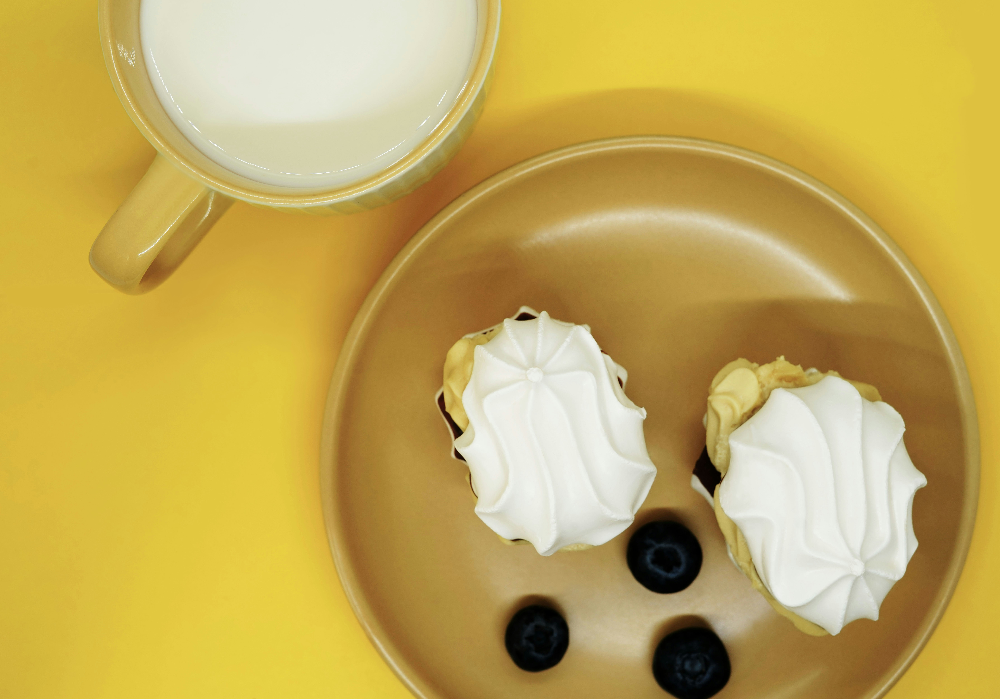
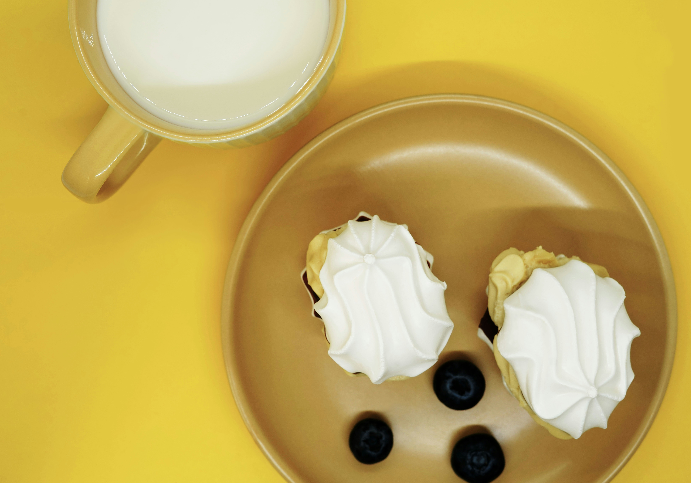

Un rincón del cielo con sabor mexicano ✨
Pan dulce, cafecito y color pastel para el alma.
Pan dulce, cafecito y color pastel para el alma.

 

Café Cielito is a cute, cozy spot inspired by Mexican flavors and colorful joy. We serve cafecito, pan dulce, and happiness in every cup. Nestled in the heart of the historic district, Café Cielito is more than a café — it's a portal to a slower, sweeter world. Founded in 1957 by the spirited Doña Lupita García, a former opera singer turned panadera, Café Cielito began as a humble conchería where locals came for warm pan dulce, café de olla, and stories that blurred the line between memory and myth. Legend has it that the café got its name after Doña Lupita saw a heart-shaped cloud over the city one morning while baking her first batch of cinnamon conchas. She took it as a sign — “un cielito,” a little piece of sky — and the name stuck.
123 Really Nice Street, Ciudad Dulce, MX